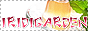
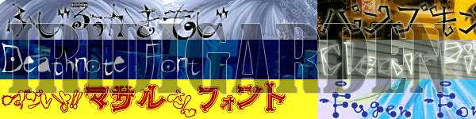
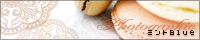
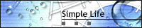
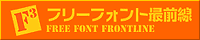

ちょっと変わったフォントをフリーでゲッツ イリディガーデン
【リンクについて】
IRIDIGARDENはリンクフリーです。事後連絡をいただけるととても嬉しいです。 フォントサイトさまとの相互リンクを募集しています。
リンクの際は、以下の情報をお使いください。
サイト名：IRIDIGARDEN（イリディガーデン）
管理人：いりも
小さいバナー 
<a href="http://mnlab.sakura.ne.jp/garden/">
<img src="http://mnlab.sakura.ne.jp/garden/ban.gif" border=0 alt="IRIDIGARDEN"></a>
大きいバナー(フリーフォント最前線で使っています) 
【special thanx!】
ミントBlue(タイトル写真をお借りしました)

SimpleLife(アイコンをお借りしました)
写真素材足成(フォント背景写真をお借りしました)

フリーフォント最前線(フォントの検索エンジンです)
【フォントサイト】
相互募集です！お気軽にどうぞ〜
Copyright(C) Iridigarden 2007-2013 all rights reserved.